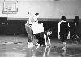

Photographs from CI25
All photographs are copyright by the photographer and appear here by permission.
- Demo performance Thursday June 5
- Nancy Stark Smith, Martin Keogh, Steve Paxton, Danny Lepkopf and KJ Holmes.
Color photo.
(Scan is missing a slice off the bottom.)
Photo: Ray Chung
- Demo performance
- Nancy Stark Smith, Martin Keogh, Steve Paxton, Danny Lepkopf and KJ Holmes
Color photo.
(Scan is missing a slice off the bottom.)
Photo: Ray Chung
- Demo performance
- Nancy Stark Smith, Martin Keogh, Steve Paxton, Danny Lepkopf and KJ Holmes
Color photo.
(Scan is missing a slice off the bottom.)
Photo: Ray Chung
- Steve Paxton demonstrating on a skeleton
Color photo.
(Scan is missing a slice off the bottom.)
- Photo: Ray Chung
- Nancy Stark Smith
- Nancy Stark Smith getting a present from the community. Martin Keogh read a long appreciation to her. In response, she said "The work taught me".
Photo: Tom Giebink. Added 20 Aug 1997.
- performance at Mixed Ability 1
-
Tom Giebink (on skates) and Bruce Curtis (in chair) from the performance
at Mixed Ability.
Photo: Gayle Burns.
- performance at Mixed Ability 2 78 Kbytes
- five dancers from Brazil.
If you know the name of the company or dancers, please tell me.
Black and white photo.
photo: Ray Chung. Added 25 Sept 1997.
 Performance at Mixed Ability 3 36 Kbytes
Performance at Mixed Ability 3 36 Kbytes
- A company from Florida (whose name I don't know)
performing "Beyond Words" (If you know the name of the company or dancers, please tell me.)
black and white photo.
photo: Ray Chung. Added 25 Sept 1997.
- Performance at Mixed Ability 4 74 Kbyte
- Steve Paxton, Karen Nelson, and Karen Daly in performance.
Black and white photo.
photo: Ray Chung. Added 25 Sept 1997.
 Jam at CI25 69 Kbyte
Jam at CI25 69 Kbyte
- A jam in the dance studio. Jordan Fuchs and Nicole Stanton circling each other.
black and white photo.
Photo: Ray Chung. Added 25 Sept 1997.
Thanks to Chris Sumpton for scanning and converting many of these photos.
Updated
19 Nov 1997.